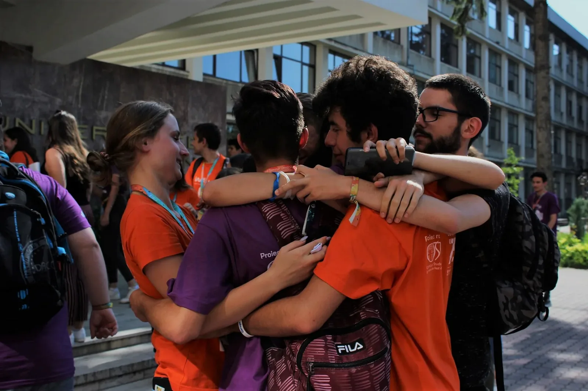
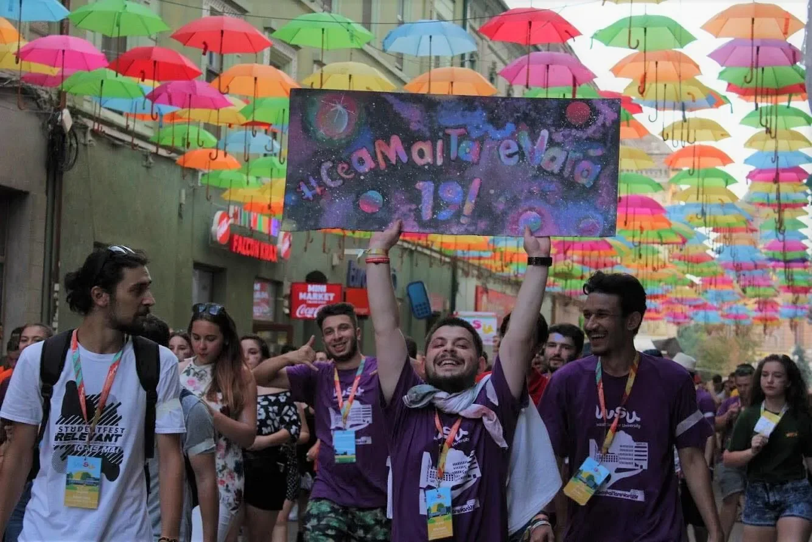
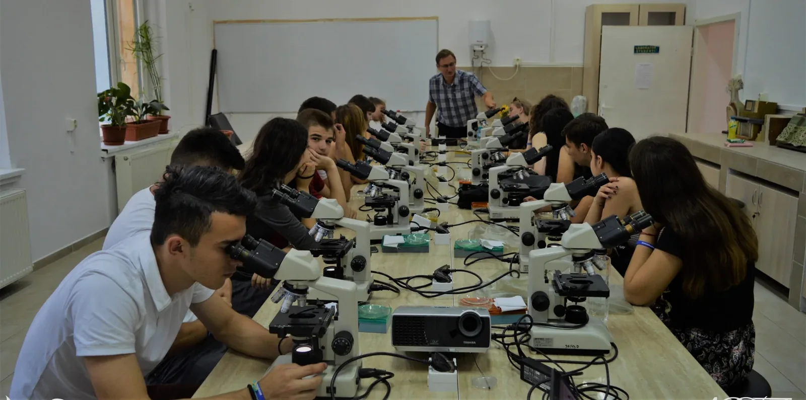
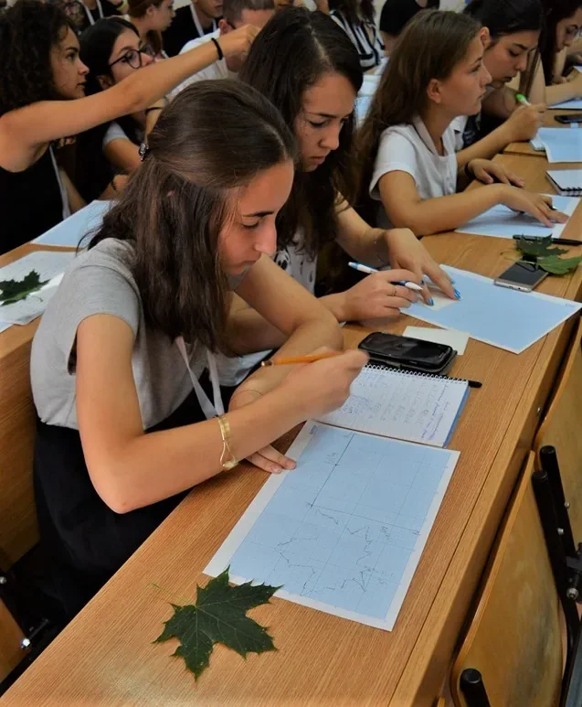

Completează formularul
Înscrierea se face online, cu atenție la documentele cerute și la opțiunea de facultate.
23 iulie - 8 august 2026, Timișoara
#CeaMaiTareVară26 îi aduce pe elevi mai aproape de viața de student, facultăți, prietenii și orașul care se mișcă mereu.
Ce este West Summer University?
West Summer University este un proiect realizat de Organizația Studenților din Universitatea de Vest din Timișoara cu sprijinul Universității de Vest din Timișoara. Acesta le oferă elevilor din România și Republica Moldova posibilitatea să experimenteze viața de student.
Cei mai tari profesori ai facultăților din cadrul UVT îi introduc pe participanți în disciplinele de bază ale profilului ales, iar programul include activități care completează experiența studențească.
Află mai mult!Cum funcționează?
Înscrierea se face online, cu atenție la documentele cerute și la opțiunea de facultate.
Veștile importante apar pe site și pe canalele sociale WSU, iar participanții selectați sunt contactați prin e-mail.
Cine suntem noi?
Noi suntem Organizația Studenților din Universitatea de Vest din Timișoara, încântați de cunoștință! An de an aducem în Timișoara sute de elevi de clasa a X-a și a XI-a cărora le oferim o experiență demnă de #CeaMaiTareVară.
Pe parcursul anului continuăm să aducem oportunități tinerilor prin proiecte precum StudentFest, ITFest Timișoara, TSR Hub și multe altele.
Cunoaște-ne!Ce poți face la WSU?

Cunoști oameni care pornesc vara cu aceleași emoții și pleacă acasă cu amintiri comune.

Programul combină atelierele cu seri tematice, jocuri, plimbări și evenimente în oraș.

Intri în laboratoare, studiouri și săli de curs ca să vezi concret cum se simte domeniul ales.

Primești context, întrebări bune și exerciții practice înainte să alegi drumul universitar.